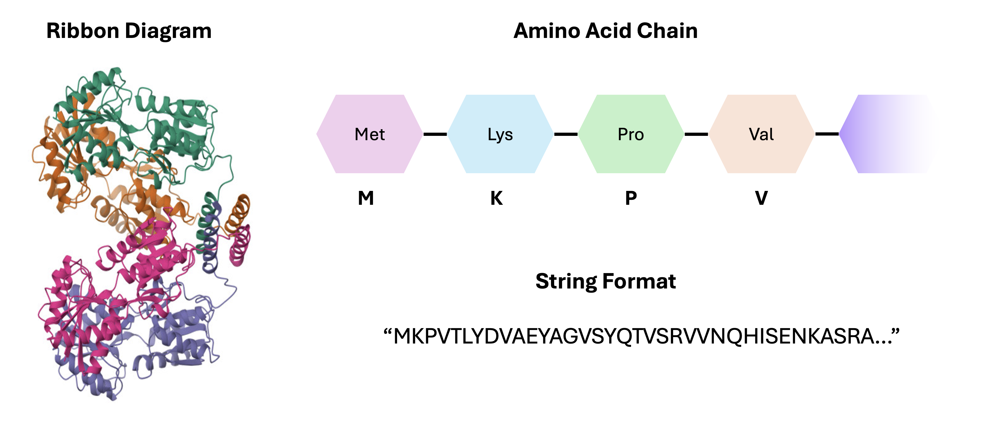
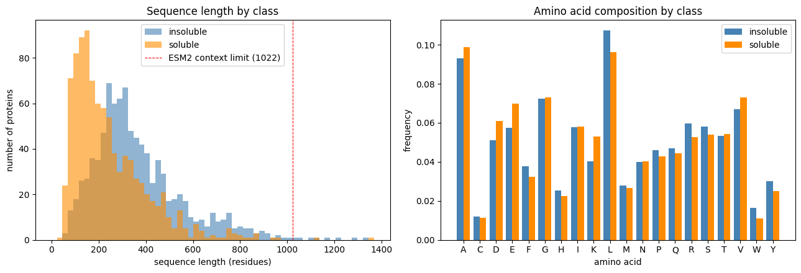
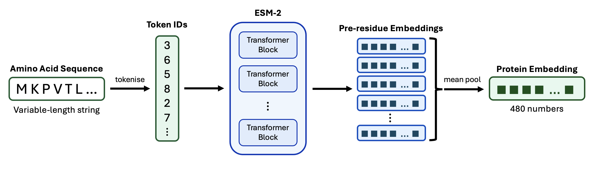
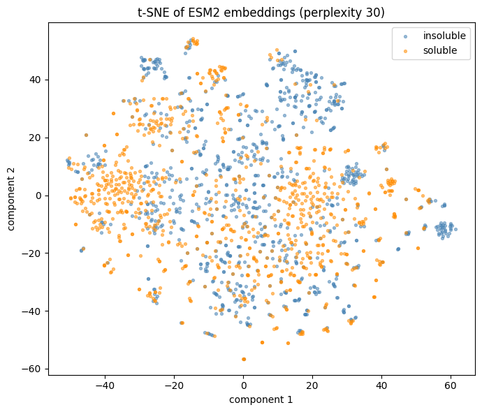
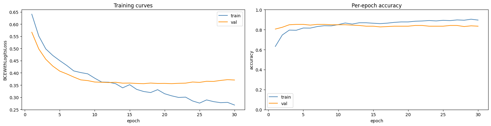

3. Protein Language Models¶
Objectives
Explain how transformers and attention mechanisms process amino acid sequences as biological language
Tokenise protein sequences and extract per-residue ESM2 embeddings for downstream tasks
Train a classifier on pooled protein embeddings to predict solubility of E. coli proteins
Visualise high-dimensional embeddings with t-SNE to reveal class structure
These notes support Session3_Protein_Language_Models_Workshop.ipynb.
Recap of Session 2¶
In the previous session, we built a plain autoencoder for encoding and decoding image data. The encoder compressed each image into a 2-dimensional latent representation, and the decoder then tried to reconstruct the original image from those two numbers alone.
Once the decoder has learned to map latent coordinates back to images, we can sample a fake latent representation, pass it through the decoder and generate a synthetic image. This is a primitive version of how many image-generation models work: learn a useful latent or noise space, then decode points from that space into plausible data.
By performing a latent space traversal, we could identify which image features may correspond with pneumonia. The key idea was that generative models are not only for making synthetic examples. They can also help us learn compact, interpretable representations for prediction and hypothesis generation.
From Image Data to Sequence Data¶
So far, we have only worked with toy data and images, but commercial generative AI relies on a very different data type: sequences - specifically, sequences of text. Models like ChatGPT and Claude are designed to take in sequences of text data and output more text data as an answer, typically in such a way that provides a realistic response to the input.
In this session, we’ll also move to sequence data - but we’ll see examples which are more biologically-relevant: proteins. A protein is made up of a chain of amino acids, and we can treat that chain as a kind of biological language.
Sequence data is first broken into tokens - these are small pieces of the data. In text, a model receives tokens such as words, subwords or characters. In proteins, each amino acid might be a token.
We’ll use a model called Evolutionary Scale Modelling-2 (ESM2), a pre-trained protein language model which converts amino acid sequences into numerical representations called embeddings - kind of like how our autoencoder converts images into a latent representation. We then train a small classifier to predict a whether or not the given amino acid sequence is soluble.
Proteins as Biological Language¶
There are 20 standard amino acids, commonly represented with one-letter codes such as A for alanine, G for glycine and W for tryptophan. Since each amino acid can be represented by a letter, a protein sequence can be represented as a string:
MKPVTLYDVAEYAGVSYQTVSRVVNQHISENKASRA…
The same deep-learning ideas used for text can be adapted to biological sequences. This applies beyond proteins too. Similar logic appears in genomics, transcriptomics and any domain where biological information is stored in ordered strings.


E. coli lac repressor protein. Proteins are usually visualised through ribbon diagrams (left). Each protein is composed of amino acid chains (top right), which are sequences of amino acid molecules. These sequences can be recorded in string or text format (bottom right).¶
Transformers¶
ESM2 is a transformer-based model. A transformer is a type of neural network designed to process sequences.
Traditional sequence models, such as recurrent neural networks, processed tokens one after another. This made it harder for the model to preserve information across long sequences. Transformers overcome this problem with attention mechanisms, which lets the model compare between all positions in the sequence in a way that is computationally-efficient.
Fundamentally, attention is just another form of matrix multiplication which is very effective at recognising both local and global relationships between elements in the sequence. In a sentence, attention can connect a pronoun to the noun it refers to. For a protein, attention can connect amino acids that are far apart in sequence but important for the same structure or function.
A transformer first converts each token into an embedding and adds information about its position in the sequence. The attention layers then calculate how strongly each token “relates” to every other token and combine information from the most relevant positions. If you’d like to learn more about attention mechanisms in transformers, I would recommend this video.
What are Protein Language Models?¶
Protein language models adapt transformer ideas from natural language processing to amino acid sequences. The details differ between models, but they usually learn by predicting masked amino acids or predicting the next amino acid in an incomplete sequence.
Protein language models are typically used for:
Regression of protein properties: Predict continuous properties such as stability or binding affinity.
Classification: Predict discrete labels such as functional class or subcellular localisation.
Protein design: Generate or rank candidate sequences with desired biochemical properties.
Protein structure prediction: Use sequence representations to help infer sequence context and ultimately generate 3D structure.
Clinical applications include drug discovery, antibody design, enzyme optimisation, and prioritising candidate proteins for experimental screening.
ESM2 is a pre-trained protein language model - this means it was already trained on many protein sequences, with the task of predicting missing or masked amino acids in a given sequence. In order to do this, the model has to learn contextual embeddings for each amino acid. These embeddings can then be used for downstream tasks through feature extraction.
In machine learning, the term for re-using a pre-trained model on a separate task is called transfer learning. In our case, we’re using a specific form of transfer learning called feature extraction, where we take the output of one network (ESM2) as input to another.
FASTA and Biological Identifiers¶
Protein sequences are commonly accessed through databases such as UniProt, which provides curated protein sequences, annotations, identifiers, organism information, functional descriptions and links to other biological resources.
Protein sequence data is often stored in FASTA format. A FASTA file has a header line, starting with >, followed by sequence metadata, with the sequence itself just underneath. For example:
>sp|P0A7V8|RS4_ECOLI 30S ribosomal protein S4 OS=Escherichia coli
MARIAGINIPDHKHPIIVVNDTLTERLKK...
In the next notebook, we’ll be classifying proteins from the bacterium E. coli into one of two classes: soluble or insoluble. We’ll download the sequence data directly from UniProt in FASTA format.
Tokenisation¶
For a protein language model, tokens are usually amino acid letters plus special tokens for padding, sequence start, sequence end or masking. Tokenised data is usually represented as a sequence of numbers, for example, I may assign the integers 1, 2 and 3 to the amino acids A, G and W. This would convert the amino acid sequence AWGWAG into the sequence of numbers \([1, 3, 2, 3, 1, 2]\).
The input layer of a neural network is of fixed size, which means that each model has a maximum input size. We usually make this much larger than necessary and fill in the empty space with special pad tokens. Padding is important because batches need tensors with consistent shapes. If one protein has 80 residues and another has 500, we pad the shorter one so the batch can be stacked.
ESM2 also has a maximum context length of 1024 - this means we can only process proteins with at most 1022 amino acids (excluding start and stop tokens). In the notebook, sequences which are longer than the context length are truncated - this is fine for the purpose of demonstration, but in practice we’d use a model with a larger context window.
In the plot below, you can see how the class distribution varies with sequence length and amino acid frequency over our E. coli data. The red line marks the context window of ESM-2, so any amino acid beyond this point is truncated.


Sequence length distributions for the protein dataset, including the ESM2 context limit. This shows how many proteins fit directly into the model and where truncation begins to matter.¶
In the notebook, we’ll use ESM2’s built-in tokeniser. Here’s an example of what tokenising the gene yaaX looks like.
# Import ESM
import esm
# Grab the sequence of yaaX - here, "gene_to_sequence" is a mapping from the gene name to its amino acid sequence
test_seq = gene_to_sequence['yaaX']
# Here, alphabet is ESM's built-in tokeniser - it converts amino acids to numbers
model, alphabet = esm.pretrained.esm2_t12_35M_UR50D()
# Get our tokens out: get_batch_converter() returns a callable, which we then call with the batch
batch_converter = alphabet.get_batch_converter()
# Convert our test sequence into a tensor of numeric tokens (we include the string "test" here because batch_converter expects a label)
_, _, tokens = batch_converter([('test', test_seq)])
print(f"Shape of token vector: {tokens.shape}")
print(f"Tokens: {tokens}")
# Print the tokens - there are 98 residues in this sequence, so we get 98 tokens + 2 for start and end tokens
Shape of token vector: torch.Size([1, 100])
Tokens: tensor([[ 0, 20, 15, 15, 20, 16, 8, 12, 7, 4, 5, 4, 8, 4, 7, 4, 7, 5,
14, 20, 5, 5, 16, 5, 5, 9, 12, 11, 4, 7, 14, 8, 7, 15, 4, 16,
12, 6, 13, 10, 13, 17, 10, 6, 19, 19, 22, 13, 6, 6, 21, 22, 10, 13,
21, 6, 22, 22, 15, 16, 21, 19, 9, 22, 10, 6, 17, 10, 22, 21, 4, 21,
6, 14, 14, 14, 14, 14, 10, 21, 21, 15, 15, 5, 14, 21, 13, 21, 21, 6,
6, 21, 6, 14, 6, 15, 21, 21, 10, 2]])
After tokenisation, the model also needs a way to know where each amino acid appears in the sequence. Transformer models therefore add positional information. Some models use learned positional embeddings, where each position also gets its own embedding. In the notebook, ESM-2 takes account of this automatically. We’ll learn more about positional embeddings in Session 4.
Embeddings¶
An embedding is a numerical representation of a token or sequence which is learned by the model. For protein language models, each amino acid token becomes a vector. Instead of representing alanine as just A or a single integer, the model represents it as hundreds of numbers that encode what it has learned about alanine in the sequence context.
The values in the embedding depend on the token itself, its position in the sequence, and its learned relationship with other tokens in the sequence.
Let’s take our example of the gene yaaX and embed it:
# Import PyTorch to use the model
import torch
# Set device, we'll use CPU for simplicity
device = "cpu"
# Let's put the model in evaluation mode, since we aren't training
model = model.to(device).eval()
# Turn off autograd
with torch.no_grad():
# Run ESM2 and ask it to return the activations from the final layer (layer 12)
out = model(tokens.to(device), repr_layers=[12])
# Slice out the per-residue features, ignoring the start/end tokens
per_residue = out['representations'][12][0, 1:len(test_seq)+1]
# Print the shape of the embedding - 98 residues, 480 dimensions
print(f"Shape of embedding vector: {per_residue.shape}")
# Print the first residue's embedding - total nonsense to you and me, but very informative to a computer
print(f"First residue's embedding: {per_residue[0]}")
Shape of embedding vector: torch.Size([98, 480])
First residue's embedding: tensor([-0.4646, -0.0841, -0.4610, 1.0782, 0.0641, 0.6295, -0.6128, -0.2486,
0.1890, 0.0380, 0.0659, -0.2056, 0.6324, 0.3972, 0.0196, 0.2712,
0.3757, -0.1252, -0.2027, 0.3060, 0.5739, 0.1633, 0.4924, 0.2532,
0.1815, 0.0940, 0.2281, 0.0185, 0.0910, -0.0648, -0.1777, -0.1487,
-0.1957, -0.1399, 0.1900, -0.1346, 0.2999, 0.5514, 0.0151, -0.2056,
0.0989, -0.1515, 0.2039, -0.0189, -0.0779, -0.2880, 3.2604, -0.0529,
0.0190, -0.1259, -0.1437, 0.1137, -0.2329, -0.2209, 0.7912, -0.0659,
-0.4655, 0.4740, -0.1308, 0.0656, -0.2505, 0.3856, 0.1642, -0.1358,
-0.4534, -0.0281, 0.0931, 1.3549, -0.1039, -0.2717, -0.3297, 0.4221,
0.5507, -0.1143, -0.0274, 0.2313, -0.2394, -0.3397, -0.0679, 0.0518,
-0.4177, 0.1395, -0.0789, -0.5254, -0.4698, 0.3896, -0.0812, -0.1291,
0.0917, 0.4713, 0.4210, 0.1720, -0.3084, -0.0209, -0.1416, -0.1696,
-0.4613, 0.3837, 0.1994, 0.2933, 0.0112, -0.2773, -0.3507, -0.2033,
0.0896, 0.0306, 0.8030, 0.5707, -0.1570, 0.2573, -0.3110, 0.1959,
0.0894, -0.0173, -0.1128, -0.4319, -0.1277, -0.0948, 0.1615, -0.1806,
0.3106, 0.0556, 0.6020, 0.2232, -0.5044, 0.2405, -0.1008, 0.1601,
0.6195, 0.0818, -0.7296, -0.1366, 0.5512, 0.2645, -0.5792, 0.4861,
...
0.2016, 0.0941, -0.2674, 0.5243, 0.1993, 0.4398, 0.0228, -0.3249,
-0.3815, -0.1317, -0.3887, -0.3381, 0.2735, 0.3801, 0.1457, -0.2235,
0.4011, -0.4918, 0.2274, 0.1585, 0.2206, 0.4126, 0.0261, 0.5850,
0.4103, 0.7095, -0.4415, 0.3491, -0.4087, -0.1106, 0.1180, -0.4492])
Discussion
Why do we use embeddings if tokenisation has already converted our sequence into numeric format?
Solution
Token IDs are arbitrary labels with no meaningful numerical relationships between them. Embeddings map those IDs to learned vectors that capture biochemical properties and sequence context.
ESM2 produces per-residue embeddings, meaning each amino acid in the protein gets its own vector. Each vector is of length 480 (but this differs between models). We may then want to summarise these vectors to extract meaningful information - in our notebook, we’ll be converting the entire sequence into one value: the probability of being soluble.
An easy way to do this is to average across all residues to get one 480-dimensional vector per protein. To do this, we use an operation called mean pooling, which just averages each position in each embedding. Since we’re just averaging the information, all protein sequences end up exactly the same size.
Exercise
ESM2 returns per-residue embeddings for a 350-residue protein. What is the shape of that output and what shape does mean pooling produce?
Solution
\((350, 480)\) before pooling, \((480,)\) after.
A diagram of the full embedding workflow is given here.


A diagram showing an amino acid sequence being tokenised, passed through ESM2, converted into per-residue embedding vectors, and averaged into one protein-level embedding.¶
Visualising Embeddings¶
Each embedding is a vector of 480 numbers. This can make them quite difficult to visualise, but by using dimensionality reduction techniques like t-SNE, we can compress each vector into 2D while trying to preserve local neighbourhoods. This means that points that are close in high-dimensional space should remain close in the 2D visualisation.
In the plot below, we can see the result of applying t-SNE to the embeddings of our E. coli proteome, coloured by protein solubility class. Obviously we lose a lot of information when we compress our data, but the fact that we can still see some clustering of soluble and insoluble points is encouraging.
This suggests that our embedding contains enough contextual information about the protein to make an assessment on its solubility class.


A t-SNE scatter plot of ESM2 protein embeddings, with points coloured by soluble or insoluble label. We have reduced the dimension of each data point from 480 to 2.¶
The MLP Classifier¶
After embedding, each protein is represented by 480 numbers, and the label is binary: soluble or insoluble. In the notebook, we’ll train a small MLP again using the Adam optimiser and cross-entropy loss. This is very similar to what we did in Session 2, but now our MLP takes an input of 480 numbers, rather than just 2.
This is computationally very efficient because ESM2 has already done the hard work of learning general protein representations. Our MLP only has to learn the final mapping from embedding to soluble/insoluble.
As we’ll see in the notebook, we’re able to use the embeddings to train our model to classify amino acid sequences to a relatively-high accuracy (~80% on validation data). We observe some slight overfitting from around epoch 15 (the training loss continues to decrease, while validation loss begins to rise), so we can stop training at around that point.


Validation curves for the solubility classifier. Left: training and validation loss (cross entropy). Right: training and validation accuracy (percentage of correctly classified sequences).¶
Discussion
Why is it computationally-efficient to extract embeddings from ESM, then train an MLP on those embeddings?
Solution
Sequences pass through ESM2 exactly once with no backpropagation. Only the tiny MLP needs to be trained. Since the embeddings never change, you can compute them once and save them, after which every training run is near-instant.
As in Session 2, we can also plot the confusion matrix to check how well our model is assigning classes. But I’ll leave that up to you.
Overview of the Next Notebook¶
To summarise, we will set up a simple protein language model pipeline to predict a discrete property of each protein from its amino acid sequence. We’ll use ESM-2 embeddings and train a small MLP to predict whether E. coli proteins are soluble or insoluble.
Protein Structure Prediction¶
Full protein structure prediction is much harder than predicting a binary property. Instead of just identifying one label per sequence, a structure model must predict the 3D coordinates of each atom in the molecule along with measures of confidence for each.
Just running one of these structure prediction models locally can take hours, but we can use online tools such as ESMFold and ColabFold to predict structure without needing to train or run the model on our own devices. If you’ve finished with the practical, check out ESMFold. Try predicting some of the example protein sequences they provide. Play around with the sequences and see what effect that has the output.